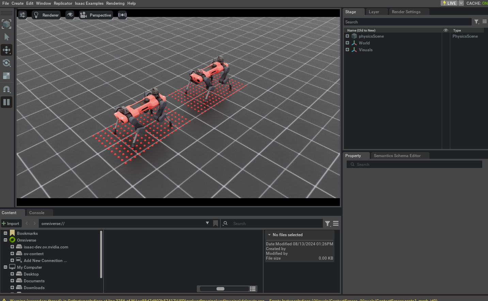

Asset Class 用于创建和模拟 Robot 的物理实体，Sensor 则用于感知 Environment。Sensor 的更新频率通常低于 Simulation，可提供本体感知或外部感知信息。例如，Camera 获取视觉数据，Contact Sensor 检测 Robot 与 Environment 的接触状态。
本教程以具有12个自由度的 ANYmal-C 四足 Robot 为例，演示如何添加不同类型的 Sensor。ANYmal-C 的四条腿各包含3个自由度。
Camera Sensor位于Robot的头部，提供RGB-D图像
提供地形高度信息的Height Scanner Sensor
联系方式 Sensors 脚上的 Robot 提供了联系信息
本教程延续上一节的 Interactive Scene 示例，并在 scene.InteractiveScene 中配置和管理这些 Sensor。
1 代码
本教程对应 add_sensors_on_robot.py，位于 scripts/tutorials/04_sensors 目录。
代码 add_sensors_on_robot.py
# Copyright (c) 2022-2026, The Isaac Lab Project Developers (https://github.com/isaac-sim/IsaacLab/blob/main/CONTRIBUTORS.md).
# All rights reserved.
#
# SPDX-License-Identifier: BSD-3-Clause
"""
This script demonstrates how to add and simulate on-board sensors for a robot.
We add the following sensors on the quadruped robot, ANYmal-C (ANYbotics):
* USD-Camera: This is a camera sensor that is attached to the robot's base.
* Height Scanner: This is a height scanner sensor that is attached to the robot's base.
* Contact Sensor: This is a contact sensor that is attached to the robot's feet.
.. code-block:: bash
# Usage
./isaaclab.sh -p scripts/tutorials/04_sensors/add_sensors_on_robot.py --enable_cameras
"""
"""Launch Isaac Sim Simulator first."""
import argparse
from isaaclab.app import AppLauncher
# add argparse arguments
parser = argparse.ArgumentParser(description="Tutorial on adding sensors on a robot.")
parser.add_argument("--num_envs", type=int, default=2, help="Number of environments to spawn.")
# append AppLauncher cli args
AppLauncher.add_app_launcher_args(parser)
# parse the arguments
args_cli = parser.parse_args()
# launch omniverse app
app_launcher = AppLauncher(args_cli)
simulation_app = app_launcher.app
"""Rest everything follows."""
import torch
import isaaclab.sim as sim_utils
from isaaclab.assets import ArticulationCfg, AssetBaseCfg
from isaaclab.scene import InteractiveScene, InteractiveSceneCfg
from isaaclab.sensors import CameraCfg, ContactSensorCfg, RayCasterCfg, patterns
from isaaclab.utils import configclass
##
# Pre-defined configs
##
from isaaclab_assets.robots.anymal import ANYMAL_C_CFG # isort: skip
@configclass
class SensorsSceneCfg(InteractiveSceneCfg):
"""Design the scene with sensors on the robot."""
# ground plane
ground = AssetBaseCfg(prim_path="/World/defaultGroundPlane", spawn=sim_utils.GroundPlaneCfg())
# lights
dome_light = AssetBaseCfg(
prim_path="/World/Light", spawn=sim_utils.DomeLightCfg(intensity=3000.0, color=(0.75, 0.75, 0.75))
)
# robot
robot: ArticulationCfg = ANYMAL_C_CFG.replace(prim_path="{ENV_REGEX_NS}/Robot")
# sensors
camera = CameraCfg(
prim_path="{ENV_REGEX_NS}/Robot/base/front_cam",
update_period=0.1,
height=480,
width=640,
data_types=["rgb", "distance_to_image_plane"],
spawn=sim_utils.PinholeCameraCfg(
focal_length=24.0, focus_distance=400.0, horizontal_aperture=20.955, clipping_range=(0.1, 1.0e5)
),
offset=CameraCfg.OffsetCfg(pos=(0.510, 0.0, 0.015), rot=(0.5, -0.5, 0.5, -0.5), convention="ros"),
)
height_scanner = RayCasterCfg(
prim_path="{ENV_REGEX_NS}/Robot/base",
update_period=0.02,
offset=RayCasterCfg.OffsetCfg(pos=(0.0, 0.0, 20.0)),
ray_alignment="yaw",
pattern_cfg=patterns.GridPatternCfg(resolution=0.1, size=[1.6, 1.0]),
debug_vis=True,
mesh_prim_paths=["/World/defaultGroundPlane"],
)
contact_forces = ContactSensorCfg(
prim_path="{ENV_REGEX_NS}/Robot/.*_FOOT", update_period=0.0, history_length=6, debug_vis=True
)
def run_simulator(sim: sim_utils.SimulationContext, scene: InteractiveScene):
"""Run the simulator."""
# Define simulation stepping
sim_dt = sim.get_physics_dt()
sim_time = 0.0
count = 0
# Simulate physics
while simulation_app.is_running():
# Reset
if count % 500 == 0:
# reset counter
count = 0
# reset the scene entities
# root state
# we offset the root state by the origin since the states are written in simulation world frame
# if this is not done, then the robots will be spawned at the (0, 0, 0) of the simulation world
root_state = scene["robot"].data.default_root_state.clone()
root_state[:, :3] += scene.env_origins
scene["robot"].write_root_pose_to_sim(root_state[:, :7])
scene["robot"].write_root_velocity_to_sim(root_state[:, 7:])
# set joint positions with some noise
joint_pos, joint_vel = (
scene["robot"].data.default_joint_pos.clone(),
scene["robot"].data.default_joint_vel.clone(),
)
joint_pos += torch.rand_like(joint_pos) * 0.1
scene["robot"].write_joint_state_to_sim(joint_pos, joint_vel)
# clear internal buffers
scene.reset()
print("[INFO]: Resetting robot state...")
# Apply default actions to the robot
# -- generate actions/commands
targets = scene["robot"].data.default_joint_pos
# -- apply action to the robot
scene["robot"].set_joint_position_target(targets)
# -- write data to sim
scene.write_data_to_sim()
# perform step
sim.step()
# update sim-time
sim_time += sim_dt
count += 1
# update buffers
scene.update(sim_dt)
# print information from the sensors
print("-------------------------------")
print(scene["camera"])
print("Received shape of rgb image: ", scene["camera"].data.output["rgb"].shape)
print("Received shape of depth image: ", scene["camera"].data.output["distance_to_image_plane"].shape)
print("-------------------------------")
print(scene["height_scanner"])
print("Received max height value: ", torch.max(scene["height_scanner"].data.ray_hits_w[..., -1]).item())
print("-------------------------------")
print(scene["contact_forces"])
print("Received max contact force of: ", torch.max(scene["contact_forces"].data.net_forces_w).item())
def main():
"""Main function."""
# Initialize the simulation context
sim_cfg = sim_utils.SimulationCfg(dt=0.005, device=args_cli.device)
sim = sim_utils.SimulationContext(sim_cfg)
# Set main camera
sim.set_camera_view(eye=[3.5, 3.5, 3.5], target=[0.0, 0.0, 0.0])
# Design scene
scene_cfg = SensorsSceneCfg(num_envs=args_cli.num_envs, env_spacing=2.0)
scene = InteractiveScene(scene_cfg)
# Play the simulator
sim.reset()
# Now we are ready!
print("[INFO]: Setup complete...")
# Run the simulator
run_simulator(sim, scene)
if __name__ == "__main__":
# run the main function
main()
# close sim app
simulation_app.close()
2 代码解析
与 Asset 一样，Sensor 也通过 Scene Configuration 加入 Scene。所有 Sensor 均继承 sensors.SensorBase，并由各自的 Configuration Class 配置。每个 Sensor 可以通过 sensors.SensorBaseCfg.update_period 单独设置更新周期，单位为秒。
Sensor 会根据 Prim Path 和 Sensor 类型连接到 Scene。部分 Sensor 会创建自己的 Prim，例如 Camera；另一些则依附于现有 Prim，例如 Contact Sensor 通过 Rigid Body Prim 上的 Contact Report API 工作。
下面依次介绍本教程使用的 Sensor 及其配置方式。更多信息请参阅 sensors Module。
2.1 Camera Sensor
Camera 使用 sensors.CameraCfg 配置。它基于 USD Camera Sensor，并通过 Omniverse Replicator API 捕获不同类型的数据。Camera 有对应的 Prim，因此会在指定 Prim Path 处创建。
Camera Sensor Configuration 包含以下参数：
spawn：要创建的 USD Camera 的类型。这可以是PinholeCameraCfg或者FisheyeCameraCfg.offset：Camera Sensor 相对于父 Prim 的偏移量。data_types：要捕获的数据类型。这可以是rgb,distance_to_image_plane,normals，或 USD Camera Sensor 支持的其他类型。
将 RGB-D Camera 安装到 Robot 头部时，需要给出它相对 Robot Base Frame 的 Offset，包括 Translation、Rotation 及 convention。
本教程将 Update Period 设为 0.1 s，即 Camera 以 10 Hz 更新。Prim Path 为 {ENV_REGEX_NS}/Robot/base/front_cam：{ENV_REGEX_NS} 表示 Environment Namespace，"Robot" 是 Asset 名称，"base" 是 Camera 所附着的 Prim，"front_cam" 是 Camera Sensor 对应的 Prim。
camera = CameraCfg(
prim_path="{ENV_REGEX_NS}/Robot/base/front_cam",
update_period=0.1,
height=480,
width=640,
data_types=["rgb", "distance_to_image_plane"],
spawn=sim_utils.PinholeCameraCfg(
focal_length=24.0, focus_distance=400.0, horizontal_aperture=20.955, clipping_range=(0.1, 1.0e5)
),
offset=CameraCfg.OffsetCfg(pos=(0.510, 0.0, 0.015), rot=(0.5, -0.5, 0.5, -0.5), convention="ros"),
)
2.2 Height Scanner
Height Scanner 是使用 NVIDIA Warp Ray-Casting Kernel 实现的虚拟 Sensor。sensors.RayCasterCfg 用于指定 Ray Pattern 和被投射的 Mesh。由于它是虚拟 Sensor，Scene 中不会创建对应 Prim，而是依附到现有 Prim 来确定 Sensor 位置。
本教程将 Height Scanner 安装到 Robot Base Frame。pattern 属性定义 Ray Pattern，规则网格使用 GridPatternCfg。由于这里只关心高度，不需要考虑 Robot 的 Roll 和 Pitch，因此将 ray_alignment 设为 "yaw"。
把 debug_vis 设为 True，可以显示 Ray 与 Mesh 的交点。
完整的 Height Scanner Configuration 如下：
height_scanner = RayCasterCfg(
prim_path="{ENV_REGEX_NS}/Robot/base",
update_period=0.02,
offset=RayCasterCfg.OffsetCfg(pos=(0.0, 0.0, 20.0)),
ray_alignment="yaw",
pattern_cfg=patterns.GridPatternCfg(resolution=0.1, size=[1.6, 1.0]),
debug_vis=True,
mesh_prim_paths=["/World/defaultGroundPlane"],
)
2.3 Contact Sensor
Contact Sensor 封装 PhysX Contact Report API，用于获取 Robot 与 Environment 的接触信息。它要求在 Robot 的 Rigid Body 上启用该 API，可通过在 Asset Configuration 中将 activate_contact_sensors 设为 True 完成。
sensors.ContactSensorCfg 用于指定需要监测的 Prim。还可以启用额外选项，获取接触与离地时间，或筛选特定 Prim 之间的接触力。
本教程把 Contact Sensor 安装在 Robot 的四只脚上，名称分别为 LF_FOOT、"RF_FOOT"、"LH_FOOT" 和 "RH_FOOT"（首个名称为 "LF_FOOT"）。Prim Path 使用正则表达式 ".*_FOOT"，一次匹配所有以 "_FOOT" 结尾的 Prim。
Update Period 设为 0，表示 Sensor 与 Simulation 同频更新。Contact Sensor 还可以保存历史数据；本例将 History Length 设为 6，保留最近 6 个 Simulation Step 的接触信息。
完整的 Contact Sensor Configuration 如下：
contact_forces = ContactSensorCfg(
prim_path="{ENV_REGEX_NS}/Robot/.*_FOOT", update_period=0.0, history_length=6, debug_vis=True
)
2.4 运行 Simulation Loop
与 Asset 相同，Sensor 的 Buffer 和 Physics Handle 只会在 Simulation 开始时初始化，因此创建 Scene 后必须调用 sim.reset()。
# Play the simulator
sim.reset()
其余 Simulation Loop 与前面的教程相似。Sensor 随 Scene 一起更新，并按各自的 Update Period 管理内部 Buffer。
Sensor 数据可通过 data Property 访问。下面演示如何读取本教程中各 Sensor 的数据：
# print information from the sensors
print("-------------------------------")
print(scene["camera"])
print("Received shape of rgb image: ", scene["camera"].data.output["rgb"].shape)
print("Received shape of depth image: ", scene["camera"].data.output["distance_to_image_plane"].shape)
print("-------------------------------")
print(scene["height_scanner"])
print("Received max height value: ", torch.max(scene["height_scanner"].data.ray_hits_w[..., -1]).item())
print("-------------------------------")
print(scene["contact_forces"])
print("Received max contact force of: ", torch.max(scene["contact_forces"].data.net_forces_w).item())
3 代码执行
代码完成后，执行以下 Command 查看结果：
./isaaclab.sh -p scripts/tutorials/04_sensors/add_sensors_on_robot.py --num_envs 2 --enable_cameras
窗口中会显示 Ground Plane、Light 和两台四足 Robot。Robot 周围的红色球体表示 Ray 与 Mesh 的交点。还可以切换 Viewport 的 Camera 视图，查看 Camera Sensor 捕获的图像；具体操作请参阅链接说明。

关闭窗口或在 Terminal 中按 Ctrl+C 即可停止 Simulation。
本教程介绍了多种 Sensor 的配置和使用方式。sensors Module 还提供其他 Sensor；scripts/tutorials/04_sensors 目录中包含最小示例，可用下列 Command 运行：
# Frame Transformer
./isaaclab.sh -p scripts/tutorials/04_sensors/run_frame_transformer.py
# Ray Caster
./isaaclab.sh -p scripts/tutorials/04_sensors/run_ray_caster.py
# Ray Caster Camera
./isaaclab.sh -p scripts/tutorials/04_sensors/run_ray_caster_camera.py
# USD Camera
./isaaclab.sh -p scripts/tutorials/04_sensors/run_usd_camera.py --enable_cameras